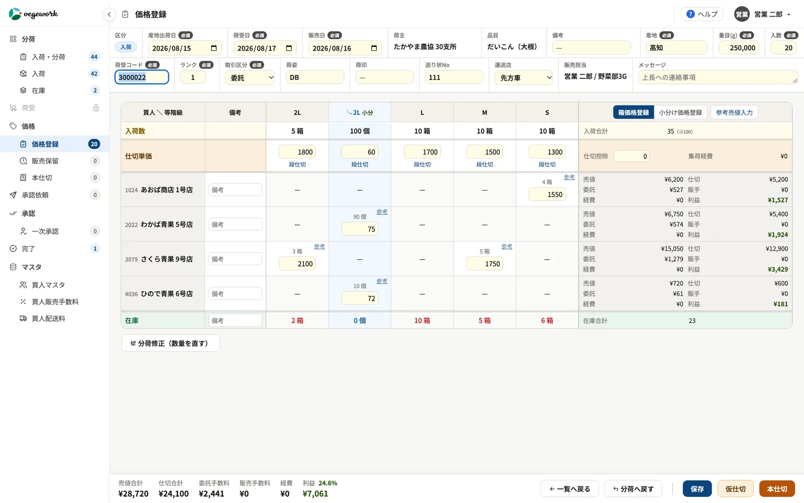
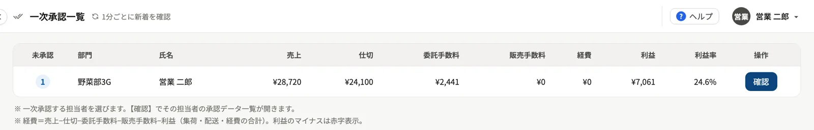

FEATURE
青果市場の価格登録・承認システム
― 売値と利益をその場で確かめる
青果卸売市場の価格登録は、買人への売値と産地への仕切値を決め、その差で利益が決まる大事な業務です。本ページでは、価格登録の業務と現場の課題、システムにするときのポイント、そしてベジワークの営業管理システム「vegework」の価格登録と承認の画面でできることを紹介します。
01価格登録とは
価格登録とは、分荷した荷について、買人へ売る値段（売値）と、産地へ支払う値段（仕切値）を決めて記録する業務です。相対取引やせりで決まった売値を買人ごとに入れ、荷口の仕切値を決めます。
売上から仕切の金額を差し引き、さらに手数料や配送などの経費を加減したものが、その荷口の利益になります。価格登録は、市場の利益が決まる場面そのものだといえます。
02価格登録の現場の課題
- 利益が月末までわからない。売値と仕切値を紙に書き、集計はあとで経理が行う――。その荷口でいくら利益が出たのかを、値を決めたその場では確かめられません。
- 値付けが担当者ひとりに任されている。売値の判断材料が担当者の経験と記憶にしかなく、ほかの人が確かめにくい状態になりがちです。
- 手数料や経費の計算が手作業。荷主や買人ごとに違う手数料や経費を、電卓や Excel で計算していると、時間がかかるうえに間違いも起きます。
- 上長が確認する時間がない。午前中は現場が忙しく、上長が取引を1件ずつ確認する余裕はなかなかありません。紙の回覧では、どこで止まっているかも見えにくくなります。
- その場で決まらない売値がある。買人との交渉が続くなど、売値がすぐに決まらない荷の扱いが、管理の抜けにつながります。
03価格登録をシステムにするときのポイント
- その場で利益が見えるか。売値と仕切値を入れたときに、手数料や経費を差し引いた利益がすぐにわかることが、利益を守る第一歩です。
- 値付けの判断材料があるか。過去の実績をもとにした目安があれば、担当者の経験だけに頼らずに値を決められます。
- 上長がまとめて確認できるか。取引を1件ずつ確認していては、忙しい時間帯に追いつきません。担当者ごとの売上や利益がひと目でわかり、まとめて承認できる仕組みなら、確認が負担になりません。
- 決まらない売値を後から入れられるか。保留にしておき、決まったときに確定できる仕組みがあると、抜けや漏れを防げます。
04vegework の価格登録の画面でできること

- 未処理の荷口を一覧で。分荷から送られた荷口は、価格が確定するまで一覧に残ります。入れ忘れの荷口がひと目でわかります。
- 売値と仕切値を入れると、利益をその場で計算。買人ごとの売値と荷口の仕切値を入れると、手数料や経費を自動で計算し、その荷口の利益がすぐに表示されます。
- 参考価格で、値付けを後押し。同じ買人・同じ品目・同じ等階級の直近の販売実績をもとに、目安となる売値を表示します。仕切値と経費から計算した損益分岐を下回らないよう自動で引き上げ、引き上げたときはその理由も表示します。
- 仮仕切と本仕切。仕切値を仮に置いて後から入れ直すことも、本仕切として確定させることもできます。仕切の詳しい流れは青果市場の仕切システムのページで紹介しています。
- 段仕切。1つの等階級の中で数量を分け、別の単価で仕切れます。一部が傷んでいて売り物にならなかったときなどに使えます。
- 売値を後から確定（販売保留）。その場で決まらない売値は保留にしておき、決まったときに入れて確定できます。一部の買人の分だけ先に確定することもできます。
- 上長は、担当者ごとの売上・利益をひと目で確認し、まとめて承認。上長の画面には、担当者ごとに未承認の件数と、売上・利益などの合計が並びます。気になる取引だけ個票を開いて確かめ、あとは一括で承認できるので、忙しい時間帯でも確認が滞りません。担当者は上長へのメッセージを添えられ、上長は理由を書いて差し戻せます。承認を使うかどうかや承認の段階は、市場の運用に合わせてご相談ください。
- 次の工程へ。承認が終わった荷口は、仕切票や販売票の出力へとつながります。

分荷から価格登録までの流れは、青果市場の分荷システムのページ、業務全体の流れは青果市場システムとは？のページで紹介しています。
05導入の進め方
手数料や経費の計算のしかた、承認の流れは、市場ごとに違います。vegework の導入では、ヒアリングと視察で今のやり方を確かめたうえで、貴社のルールに合わせて設定・開発します。紙や Excel で運用している場合も、業務ごとに段階的に移していけます。
06よくある質問
Q. 手数料や経費の計算は、市場独自のやり方に合わせられますか？
はい。荷主や買人ごとの手数料、配送などの経費の計算のしかたを伺い、貴社のルールに合わせて設定・開発します。
Q. 承認の流れは、市場の運用に合わせられますか？
はい。承認を使うかどうか、何段階で行うか、誰が承認するかは、市場の運用に合わせてご相談ください。承認を使う場合も、上長は担当者ごとの売上・利益の合計を見ながら一括で承認できるため、忙しい時間帯の負担を抑えられます。
Q. その場で売値が決まらない荷はどうなりますか？
売値を空欄のまま確定すると、承認後に販売保留として残ります。売値が決まったときに入れて確定でき、一部の買人の分だけ先に確定することもできます。
Q. 参考価格はどのように計算していますか？
同じ買人・同じ品目・同じ等階級の直近の販売実績をもとに、入力中の仕切値に過去の売値と仕切値の割合を掛けて計算します。仕切値と経費から計算した損益分岐を下回らないよう、自動で引き上げます。
価格登録や承認の流れのシステム化について、お気軽にご相談ください。資料のご請求も承っています。
資料請求・お問い合わせはこちら →